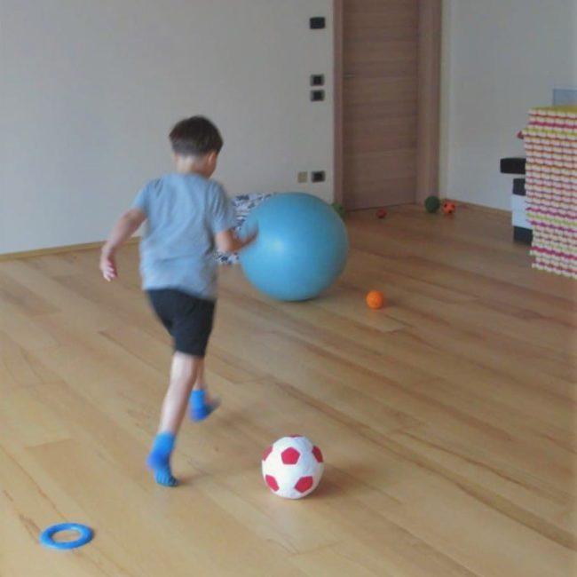
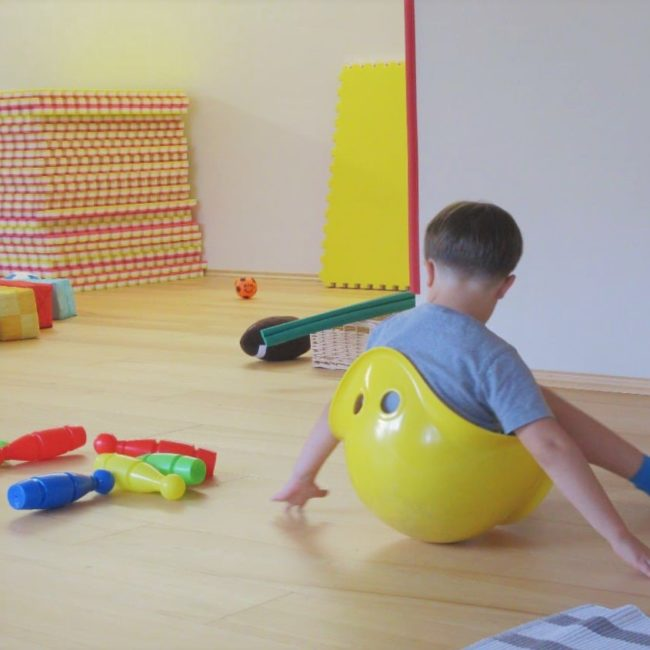
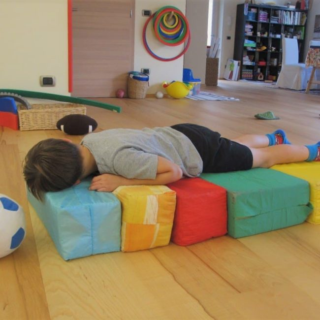

Non siamo solo un corpo meccanico che agisce e una mente che pianifica. Siamo un’integrazione di emozioni, sentimenti, sensazioni corporee, aspetti psichici e motori che interagiscono continuamente.
Veniamo al mondo con un corpo attraversato da moltissime stimolazioni. Grazie all’adulto e al lavoro fondamentale del genitore, questi stimoli trovano voce e ordine: gradualmente si struttura il pensiero e diventa possibile uno sviluppo sempre più complesso.
La psicomotricità studia proprio questo equilibrio fra mente e corpo, emozione ed espressività, mondo interno e azione. Il corpo si esprime nell’ambiente e nella relazione con gli altri, alla ricerca di un equilibrio personale e relazionale.
“La psicomotricità è la scienza che studia l’uomo nella sua totalità, nel suo rapporto con se stesso, l’ambiente e gli altri.”Franco Boscaini

Per i bambini
La psicomotricità nasce inizialmente per accompagnare i bambini e il loro sviluppo: un percorso fatto di tappe evolutive preziose, che è importante conoscere e comprendere.
Il gioco
Il gioco è un’esperienza psicomotoria che coinvolge tutta la personalità. Fa emergere il piacere del fare, la curiosità, la creatività e l’espressività. Attiva l’iniziativa, favorendo progettualità, strategie d’azione e capacità di risolvere problemi.
Nel gioco trovano spazio anche sentimenti ed emozioni: desideri, paure e aspettative possono essere comunicati ed elaborati.

